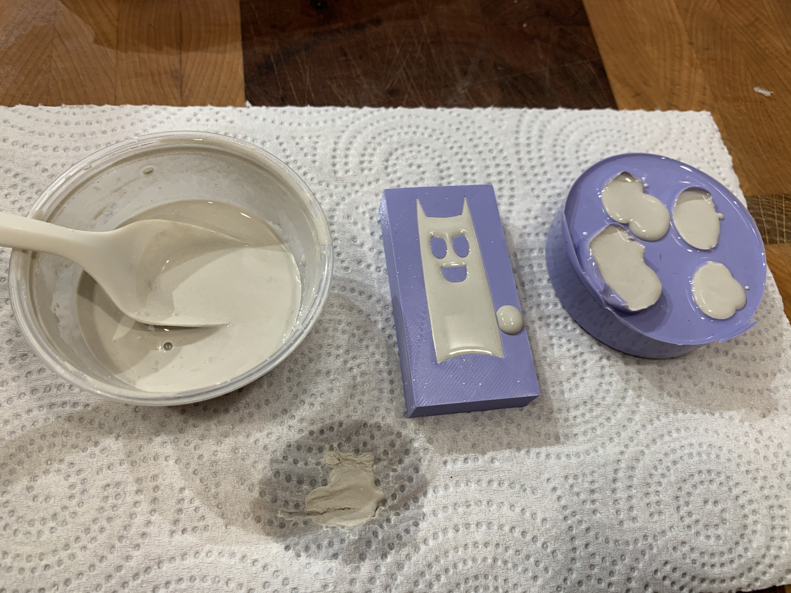

A6: Molding & Casting
by Kellie Dunn for HCDE 598
Here is my finished project.
When deciding what to make multiples of, I was inspired by the demon character in Lucy Bellwood's comic book, "100 Demon Dialogues."

I started by modeling a simple demon body shape in Onshape. I made little holes for the arms, legs, and tail, which I intended to add later as wires so that the little fella would be poseable.
After modeling the demon, I decided to keep it simple and make a one-part mold because I was behind schedule this week, so I made a new version of it with a flat back, made a box shape to contain the mold, and mated them in an assembly.
Because of the timeline, I decided to go with 3D printing for my mold container, because I am more familiar with the tools and software and could do it more quickly than toolpathing or troubleshooting a 3D machinable wax milling job for the first time under a time crunch. I exported the assembly as an STL file and printed it on my partner's Creality Ender 3 3D printer.
If I was to do it again, I'd set the print quality to be a little finer and slower, bceause my demon has some undesirable ridge texture on the top, but I figured I could fix that with some sanding at the end of the process.
Mixing and pouring the Oomoo 30 Tin-Cure Silicone Rubber for my mold went uneventfully. This is a process I've done in my theatre craft/prop work before. Compared to making a lifecast of an actor's face, this was really straightforward, quick and easy! I measured out small amounts of both parts, poured the pink one into my mixing container first because it was goopier and I had a feeling it would take longer to scrape out of the measuring container, added the blue, stirred them up, and streamed them into my mold with a chopstick to minimize air bubbles. Vibrating the mold once I had all of the silicone solution in it brought the rest of the tiny air bubbles to the surface.
I left it overnight to cure. It set up just fine, and even the tiny wire holes came out perfectly in the silicone!
I mixed a little too much of the Oomoo. After I poured the demon mold and my leftover silicone still had some pot life left, I grabbed another container, and some snail shells I had from my aquarium (RIP Roomba, Roomba II, Roomba III, and Roomba IV) and made a little mold of those too just for fun.
I learned to mix plaster not by measuring, but by starting with an appropriate amount of water and sprinkling in the plaster powder until it just starts to make little crackly islands at the surface of the water, then mixing and pouring. I decided to stick with this method, and I made a little video of the process.
Because the demon is so small and has a lot of surface area, the plaster dried enough to demold it fairly quickly - I gave it about half an hour for each pour before taking the pieces out to let them finish curing.


Once they were dry, I did a little sanding on the plaster positives with a nail file to smooth out the ridges. I painted them black, and made little limbs out of wire and glued those in. In hindsight, I wish I'd set the wire holes a little further away from the surface, because it was really easy to crack the thin part of the plaster when gluing in the wires. I did a little repair with some more glue and some paint and my little demon is looking good.


Documentation for Assignment 1:
Onshape file
STL file for 3D print
Acknowledgements:
Lukas for selling me some plaster!
Dave for design consultation!